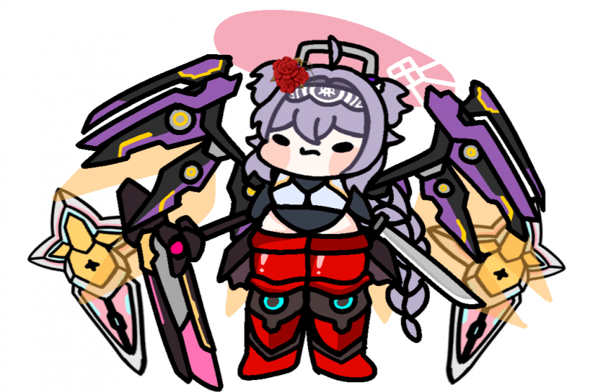
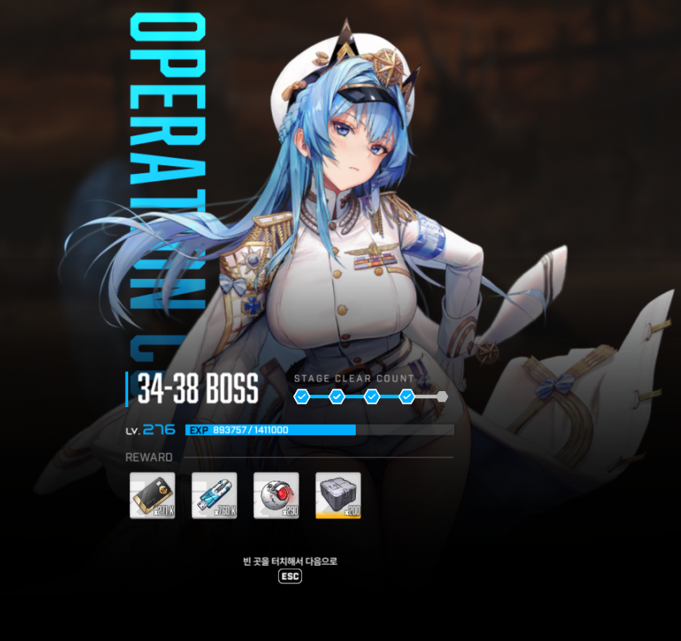
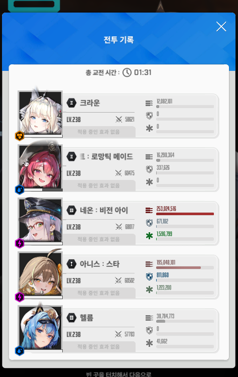

클리어 투력은 303k
30프레임으로 했음. 60으로하면 돌이 자꾸 삑나서
2:56 아니스 메스트 헬름
버스트 아끼고 2페 진입 하자마자 버스트
2:36 아니스 크라운 네온
2:23 아니스 메스트 헬름 <<여기서 60프레임 잡으면 아니스가 자꾸 따발총 맞고 터져버림
2:15 이쯤 나오는 돌 둘중하나는 직접 타게팅잡고 부숴주는게 편함 버스트 때문에
2:11 아니스 크라운 네온
이후에 저지 나오는데 보통 아니스가 알아서 해주는데 안되면 직접 해주면댐
1:57 아니스 크라운 헬름
1:45 아니스 메스트 네온
나느 흑련없어서 탱탱볼 주차가 길어져서 그런지 막상 해보니까 전기발악패턴도 안보고 여기서 잡아버림
이 뒤에 두번째 저지는 최대한 늦게해주고,
돌진나오면 엄폐하고
대충 전기지지는건 헬름으로 버티고 하면 될듯?
근데 어차피 300k로 잡는거면 2차저지 전후로 터트릴듯